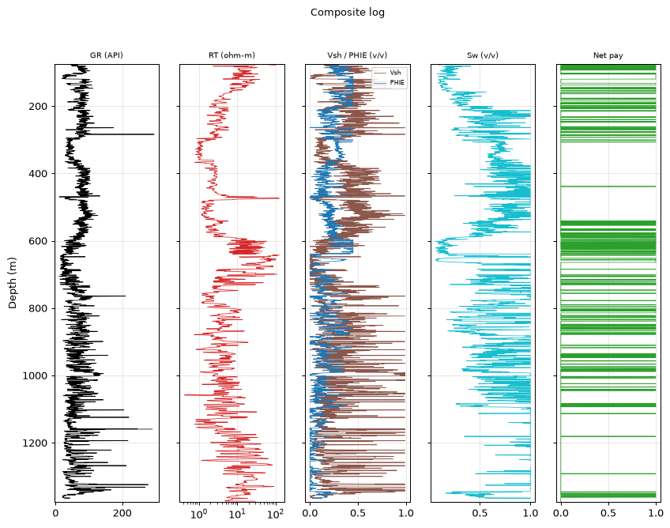
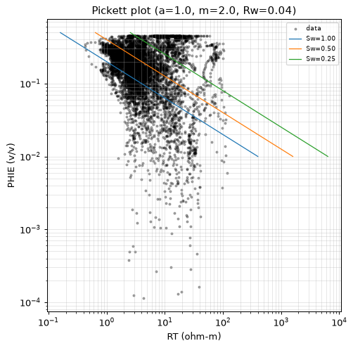
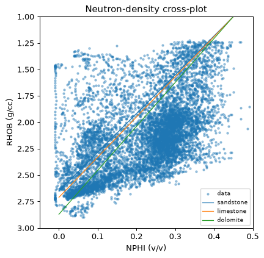
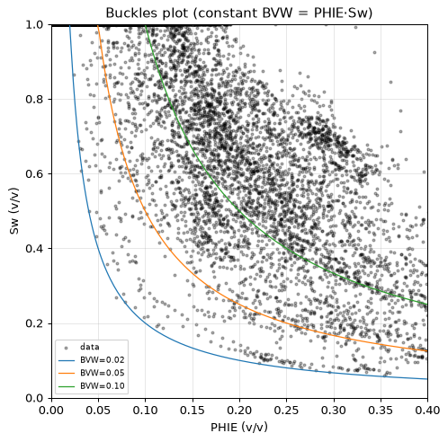
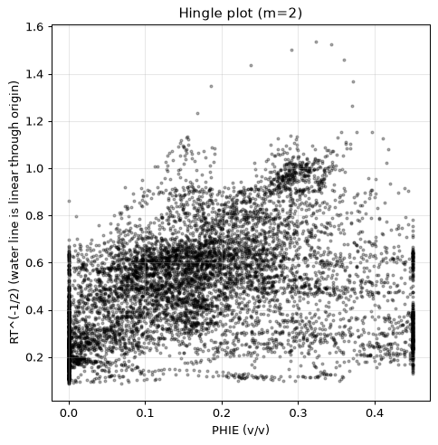
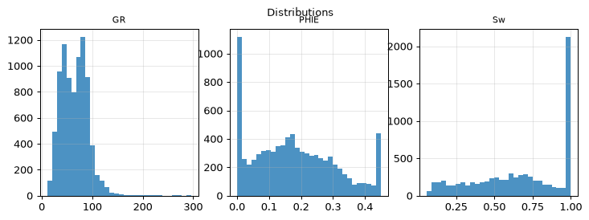
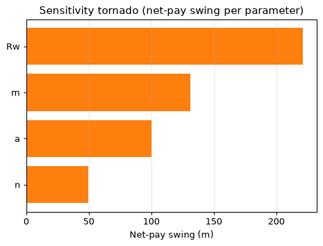
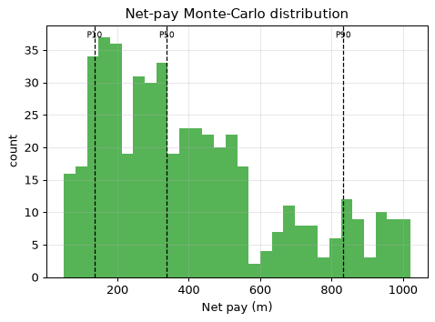

| Well (UWI) | 15-135-25945-00-00 |
| Log date | 3/14/2017 |
| Service company | Pioneer Energy Services |
| Larionov variant | old_rocks (degraded) |
| Convergence status | DID_NOT_CONVERGE |
| Confidence tier | ○ BRACKETED |
| Engine versions | calc_vsh 0.1.0 · calc_phie 0.1.0 · calc_sw 0.1.0 · formula_registry 0.1.0 |
| Config hash (SHA-256) | 2a9cb78728e386ab… |
| Git SHA | 13b57cc3a42c |
| Generated | autonomously, no human in the per-report loop |
Confidence legend. Each result is tagged by parameter provenance: ● FIRM (core-calibrated) · ◐ QUALIFIED (offset-derived) · ○ BRACKETED (regional/global default — read as a range, dominant uncertainty stated). The system does not claim *always correct*; it states how well-supported each number is.
⚠️ ABSTENTION — this is NOT a confident estimate. The run did not converge to a defensible result; the numbers below are an uncalibrated engineering estimate, reported for transparency only:
- 1 unresolved MECHANICAL objection(s)
- net-pay avg PHIE 0.31 > 0.25 — implausibly high for carbonate
This interpretation should be read as a bracketed estimate rather than a firm result. Across a gross interval of 1301.5 m, the net-to-gross of 0.187 points to a modest pay fraction, with the net-pay estimate itself spanning a wide range from 136.4 m at P10 to 833.3 m at P90 around a P50 of 338.9 m — a spread that reflects genuine uncertainty rather than a confident single number. Within the flagged pay, effective porosity averages 0.291 against a water saturation of 0.295 and a shale volume of 0.184, though the porosity figure is implausibly high for carbonate and should be treated with caution. The dominant driver of this uncertainty is Rw, which here is an uncalibrated regional default and alone swings net pay by 221.4 m; with no core control and three unresolved validator objections, these values are best regarded as provisional ranges pending calibration.
Net pay P10 / P50 / P90 = 136.4 / 338.9 / 833.3 m.
Net pay is dominated by 'Rw', which is a regional DEFAULT (uncalibrated). This is the single largest uncertainty — the result is bracketed, not a confident point estimate.
| Edit type | Curve | Detail |
|---|---|---|
| unit_conversion | NPHI | factor 0.01 |
| hard_range_mask | RHOB | count 1 |
| hard_range_mask | RT | count 93 |
| range_warn | RHOB | count 3 |
| range_warn | NPHI | count 111 |
| spike_removal | — | 59 edits |
| degradation | — | — |
Raw mnemonics mapped to canonical curve names:
| Canonical | Raw mnemonic |
|---|---|
| DCAL | DCAL |
| GR | GR |
| NPHI | CNLS |
| RHOB | RHOB |
| RT | RILD |
Unit conversions: NPHI×0.01.
Edits applied before compute (by type): degradation: 1, hard_range_mask: 2, range_warn: 2, spike_removal: 59, unit_conversion: 1.
All numbers are produced by the deterministic, golden-tested engine. The LLM only selects methods/parameters and writes prose — it never computes a number. Figures are deterministic renderings of these computed numbers for the human reader; the agent reasons over the numeric EDA digest, not images (the models have no vision).
| Step | Method (frozen) | Version |
|---|---|---|
| Vsh | Larionov 1969 (old rocks) | vsh_larionov_old 0.1.0 |
| PHIE | Density-neutron crossplot, shale-corrected | phie_density_neutron 0.1.0 |
| Sw | Simandoux 1963 (shaly sand) | sw_simandoux 0.1.0 |
| Net pay | Vsh/PHIE/Sw cutoffs → net sand → net reservoir → net pay | netpay 0.1.0 |
| Uncertainty | Monte Carlo P10/P50/P90 + parameter sensitivity | mc 0.1.0 |
Low-resistivity scan: rt_threshold=1.47, n_flagged=840, intervals=[[295.7, 297.3], [299.5, 299.6], [304.2, 360.0], [365.5, 368.8], [369.3, 369.4], [482.5, 488.0], [498.7, 500.3], [503.5, 506.3], [513.0, 516.0], [516.3, 518.0]].
Matrix point-shares (fraction of points near each matrix line): sandstone: 0.144, limestone: 0.192, dolomite: 0.084. Engine crossplot output; naming the dominant lithology is the analyst's judgement. Comparison with core/mud log: not available (LAS-only).
Composite log

Pickett plot

Neutron-density crossplot

Buckles plot

Hingle plot

Distributions

Sensitivity tornado

Net-pay Monte-Carlo distribution

Mean Vsh by method (selection is the engine's; the LLM authors no number):
| Method | Mean Vsh | Selected |
|---|---|---|
| vsh_larionov_old | 0.322 | ✓ |
| vsh_larionov_tertiary | 0.238 | |
| vsh_linear | 0.448 | |
| vsh_clavier | 0.304 | |
| vsh_steiber | 0.261 | |
| vsh_neutron_density | 0.062 | |
| vsh_multimineral | 0.061 |
Mean porosity by method (effective where shale-corrected; the LLM authors no number):
| Method | Mean porosity | Selected |
|---|---|---|
| phie_density_neutron | 0.202 | ✓ |
| phi_density | 0.293 | |
| phi_neutron | 0.214 |
Mean Sw (Simandoux 1963 (shaly sand)) = 0.563 (a=1.00, m=2.00, n=2.00, Rw=0.0436 ohm-m). Electrical parameters are engine-sourced; alternative Sw models are optional sections.
Raw net-pay runs merged into 113 intervals (gap tolerance 1.5 m); showing the 15 thickest, depth-ordered. Full set traces in the ledger.
| Interval | Top (m) | Base (m) | Net pay (m) | Avg PHIE | Avg Sw | Avg Vsh |
|---|---|---|---|---|---|---|
| Z1 | 104.4 | 119.8 | 15.1 | 0.392 | 0.166 | 0.079 |
| Z2 | 132.0 | 136.7 | 4.9 | 0.448 | 0.146 | 0.124 |
| Z3 | 154.7 | 159.1 | 4.1 | 0.359 | 0.216 | 0.282 |
| Z4 | 207.7 | 212.8 | 5.2 | 0.256 | 0.362 | 0.170 |
| Z5 | 588.1 | 599.7 | 10.2 | 0.315 | 0.199 | 0.227 |
| Z6 | 601.2 | 613.9 | 9.1 | 0.402 | 0.132 | 0.145 |
| Z7 | 616.3 | 621.6 | 4.1 | 0.418 | 0.116 | 0.116 |
| Z8 | 627.0 | 632.5 | 5.0 | 0.444 | 0.122 | 0.105 |
| Z9 | 651.1 | 664.0 | 11.4 | 0.246 | 0.119 | 0.023 |
| Z10 | 725.6 | 731.4 | 5.6 | 0.162 | 0.383 | 0.123 |
| Z11 | 800.6 | 814.0 | 13.1 | 0.190 | 0.334 | 0.161 |
| Z12 | 832.9 | 838.7 | 5.2 | 0.342 | 0.272 | 0.160 |
| Z13 | 934.1 | 939.7 | 5.2 | 0.159 | 0.424 | 0.165 |
| Z14 | 1085.9 | 1093.0 | 5.2 | 0.283 | 0.378 | 0.210 |
| Z15 | 1353.8 | 1361.8 | 7.2 | 0.161 | 0.424 | 0.047 |
| Quantity | Value |
|---|---|
| Gross interval | 1301.5 m |
| Net pay (P10/P50/P90) | 136.4 / 338.9 / 833.3 m |
| Net-to-gross | 0.187 |
| Avg PHIE (net pay) | 0.291 |
| Avg Sw (net pay) | 0.295 |
| Avg Vsh (net pay) | 0.184 |
Monte Carlo, 500 realizations (seed 42). Net pay swing per parameter (one-at-a-time):
| Parameter | Net-pay swing (m) |
|---|---|
| Rw | 221.4 |
| m | 131.2 |
| a | 100.3 |
| n | 49.7 |
Dominant uncertainty: Rw (swing 221.4 m).
Multi-seed robustness: P50 stable (spread 21.6 m across 4 seeds).
Net pay is dominated by 'Rw', which is a regional DEFAULT (uncalibrated). This is the single largest uncertainty — the result is bracketed, not a confident point estimate.
| Parameter | Value | Unit | Provenance | Source |
|---|---|---|---|---|
| gr_min | 20.000 | API | default | — |
| gr_max | 120.000 | API | default | — |
| rho_ma | 2.662 | g/cc | data_driven | Schlumberger 1989 |
| rho_fl | 1.000 | g/cc | default | — |
| phie_max | 0.450 | v/v | default | — |
| phi_sh_d | 0.261 | v/v | data_driven | — |
| phi_sh_n | 0.300 | v/v | data_driven | — |
| a | 1.000 | - | default | Winsauer et al. 1952 |
| m | 2.000 | - | default | Archie, G.E. 1942 |
| n | 2.000 | - | default | Archie, G.E. 1942 |
| Rw | 0.044 | ohm-m | data_driven | Kansas Geological Survey 2000 |
| rt_hydrocarbon_floor | 5.000 | ohm-m | default | — |
| vsh_cutoff | 0.350 | v/v | default | — |
| phie_cutoff | 0.100 | v/v | default | — |
| sw_cutoff | 0.500 | v/v | default | — |
| bit_size_config | 7.875 | in | default | — |
| qc_abort_threshold | 0.800 | - | default | — |
| circuit_breaker_n | 3.000 | - | default | — |
The citations table (not RAG) gives each cited parameter exactly one frozen source. Parameters tagged
defaultare regional/global — they drive the bracketed tier.
Boundary-inclusive criteria applied by the engine (netpay) to flag reservoir:
| Stage | Criterion | Cutoff | Provenance |
|---|---|---|---|
| Net sand | Vsh ≤ cutoff | 0.350 | default |
| Net reservoir | + PHIE ≥ cutoff | 0.100 | default |
| Net pay | + Sw ≤ cutoff | 0.500 | default |
Cutoff values are engine parameters (never LLM-authored); the dominant net-pay uncertainty is Rw — see Uncertainty for the swing.
Curve provenance (canonical ← raw mnemonic): DCAL←DCAL, GR←GR, NPHI←CNLS, RHOB←RHOB, RT←RILD.
QC edits applied before compute — degradation: 1, hard_range_mask: 2, range_warn: 2, spike_removal: 59, unit_conversion: 1.
| Validator | Type | Detail |
|---|---|---|
| vsh_phie_anticorrelation | support | Vsh-PHIE Pearson 0.94 > 0.3 (dirty rock + high porosity) |
| rt_sw_consistency | mechanical | 521 depths with Sw<0.4 but RT<5.0 ohm-m |
| net_pay_plausibility | irreducible | net-pay avg PHIE 0.31 > 0.25 — implausibly high for carbonate |
flowchart TD
dec_1["decision: step: crossplot"]
act_1["tool_call: crossplot"]
dec_2["decision: step: compute_sw"]
act_2["tool_call: compute_sw"]
dec_3["decision: step: examine_figures"]
act_3["tool_call: examine_figures"]
dec_4["decision: step: histogram"]
act_4["tool_call: histogram"]
dec_5["decision: step: crossplot"]
act_5["tool_call: crossplot"]
dec_6["decision: step: low_res_scan"]
act_6["tool_call: low_res_scan"]
dec_7["decision: step: crossplot"]
act_7["tool_call: crossplot"]
dec_8["decision: step: histogram"]
act_8["tool_call: histogram"]
dec_9["decision: step: crossplot"]
act_9["tool_call: crossplot"]
dec_10["decision: step: histogram"]
act_10["tool_call: histogram"]
dec_11["decision: step: crossplot"]
act_11["tool_call: crossplot"]
dec_12["decision: step: histogram"]
act_12["tool_call: histogram"]
dec_13["decision: DETERMINISTIC RECLOSE (stale chain): apply_cutoffs"]
act_13["tool_call: apply_cutoffs"]
dec_14["decision: DETERMINISTIC RECLOSE (stale chain): run_uncertainty"]
act_14["tool_call: run_uncertainty"]This is a LAS-only study. Data that would calibrate the interpretation is absent:
The net-pay estimate for well 15-135-25945-00-00 should be read as a bracketed range rather than a firm figure, spanning roughly 136.4 m at P10 to 833.3 m at P90 around a P50 of 338.9 m across the 1301.5 m gross interval, with a net-to-gross of only 0.187. The dominant control on this spread is the water resistivity, Rw, which here is a regional default carrying no local calibration and contributing a swing of 221.4 m — by far the single largest source of uncertainty in the interpretation. It bears noting that the net-pay average PHIE of 0.291 sits above what one would expect for a carbonate, and this run did not resolve all objections, so the numbers above are provisional rather than confident point estimates. The highest-leverage next step is unambiguous: obtain a measured Rw, ideally from a produced-water sample or a Pickett-plot anchor against core, to convert this bracketed result into a defensible estimate.
{
"net_pay_total_m": 243.23040000000015,
"net_pay_p10_p50_p90": [
136.4284800000001,
338.9376000000002,
833.2774800000007
],
"driving_params": {
"a": 1.0,
"m": 2.0,
"n": 2.0,
"Rw": 0.043562797392205053
},
"claim_verifier": {
"result": "PASS",
"flags": [],
"tone_flags": []
}
}| Item | Present |
|---|---|
| QC edits recorded before compute | ✓ |
| Every number ledger-traced | ✓ |
| Confidence tier on the run | ✓ |
| Parameter citations frozen | ✓ |
| Validator objections listed, not hidden | ✓ |
| Uncertainty propagated (Monte Carlo) | ✓ |
| Claim verifier run on prose | ✓ |